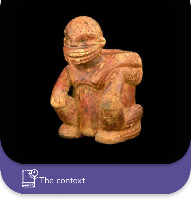

Ceramic Vessel (also known as basket):
Period: Ilama (1500 BC – 100 BC)From: Restrepo, Valle del Cauca
Made of: ceramic
Technique: Modeling and incisions. For making the details in the fresh mud, branches of trees were used and when they already had all the details of the piece, it was passed to be burned in the fire to give the final result of the vessel.
Use: this vessel was used in rituals and ceremonies. They were also used to carry cotton, corn, medicinal plants, etc. that they were going to exchange with other communities.
About Ilama period (1500 B.C to 100 B.C)
Ceramic vessels highlight the relations between human beings and nature, the everyday world and the supernatural. The physical appearance of people, their hairstyles and ornaments, their daily functions and activities, can be seen in these ceramic vessels in the form of men carrying containers or women breastfeeding their children.
It is known that these vessels were deposited in tombs as part of the funerary trousseau, which is why it is possible that the personage that shows the vessel is the deceased himself, that is, men and women dedicated to different economic, political and religious activities.
The male figures carry a container on their backs; they show headdresses, necklaces, bracelets and body painting on the chest with designs formed by geometric figures. Their facial features are exaggerated, the lips thick, the nose large and aquiline and in some cases the upper and lower extremities are robust and bulky, which gives them a strong and corpulent appearance. Some headdresses are ridge-shaped and parallel incised lines can be seen on the head, resembling a hairstyle. On the other hand, the feminine figures, of robust context, also exhibit corporal adornments, hairstyles and necklaces. In these the theme of motherhood is recurrent.